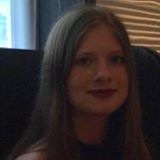

Blanche 🤠
Salut ! Je m'appelle Blanche Delaye ! Je suis née à Marseille, mais j'ai vécu dans plein d'endroits différents comme Saint Pétersbourg et Jakarta. Vous l'aurez compris, j'aime beaucoup voyager. J'aime aussi les sports d'équipe, je fais partie de l'équipe de handball féminine de l'IESEG.
Voyages😎
J'ai vécu de mes 4 mois à mes deux ans à Saint Pétersbourg, de mes trois à cinq ans en Grèce et de mes 14 à 17 ans à Jakarta en Indonésie. Sinon, j'ai aussi voyagé à Madagascar, aux Maldives, au Sri Lanka, aux USA, en Italie, en Espagne, au Nigeria, au Sénégal, en Angleterre, aux Pays-Bas, en Belgique, en Martinique, en Suisse, en Croatie, en Turquie, en Australie, et Indonésie.
Le Handball 🤾🏼♀️
J'ai toujours apprécié les sports collectifs et cette année j'ai décidé d'intégrer l'équipe de hand de l'IESEG les "Handestructibles".
Mes Réseaux